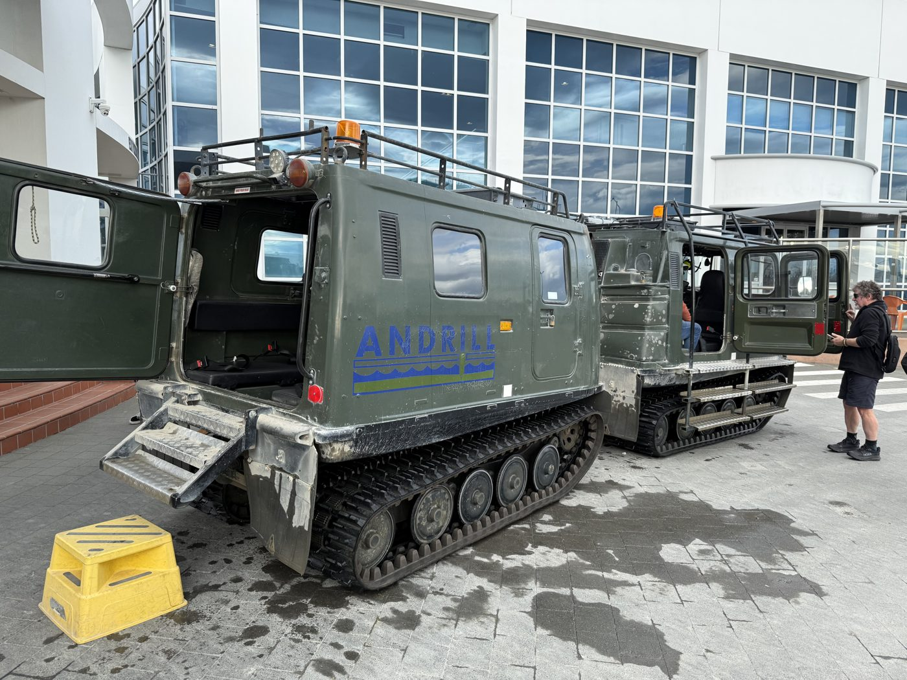

Fourteen hours over the Pacific, a lost day at the date line, and two weeks of jumping off, out of, and into everything the country had to offer.
Six hours RDU to LA — TSA PreCheck and Clear were a smart move. A two-hour layover meant time to tour the airport lounges the new travel card unlocks (Cathay Pacific took the crown), then an overnight 787 Dreamliner to Auckland. Premium economy, first row: the only way a 14-hour flight becomes almost passable. Watched every episode of The Pitt.
Crossed the international date line and landed early morning. An Uber into downtown with a friendly Indian driver who covered the local news and the best Indian restaurants in one ride. Pro tip confirmed: do not rent a car straight off the long flight — they drive on the left, and the roundabouts are a masterclass in confusion.
The Grand Hotel by the Sky Tower let me check in early — a reminder to never cheap out on accommodations. You're supposed to stay awake until sunset to beat jet lag. I took a nap anyway.
Woke up refreshed and just started walking — the best way to get a feel for a place. Auckland is busy by day and the harbour district is close. Then the classic first-day move: hop a bus and ride the loop. The Auckland Explorer Bus hit Mt Eden, the museum, the shopping district, the zoo, the harbour, the Sky Tower, and the aquarium — sharks and penguins included.
Morning with the All Blacks tour and a visit to the stadium at Eden Park. Then the ferry across to Waiheke Island for a wine tour — Te Motu and several other world-famous vineyards close by — where I met up with two couples from Auckland and had a wonderful time.
Zipline and forest walk at EcoZip Adventures: a beautiful island experience with plenty of history. With only two roads and no transport, I started walking back to the ferry — until a friendly local Kiwi gave me a ride. Made it back to the hotel in time for their local special.
Skydiving over the North Island — with a bonus chance to practice Chinese, since the safety briefing was in Mandarin. The GoPro caught everything my brain was too busy screaming to remember. Landed (twice) and celebrated with wonderful Indian food at the place recommended near Albert Park.
SkyJump off the Sky Tower, then the tower walk — thanks to a wonderful fellow traveler who lent me the courage to do the walk around the rim. Then a hike out to the Auckland Zoo through Western Springs, with a stop at the technology museum on the way back.
The zoo had a kiwi feeding session run by one of the staff — the first time I've ever seen a live kiwi. (They're nocturnal birds.)
Picked up the rental — a Ford Everest — and drove south past Lake Taupō to the hot springs at Rotorua. Rafted the gorge, then capped the day with a Māori feast and a night walk. The Māori culture is fascinating, and steam rises out of the ground everywhere you look.
A quick A220 hop to Christchurch, and a Subaru Outback waiting at the airport — the correct vehicle for what the South Island had planned. Good to be back in the city I called home for almost ten years.
Morning in Hagley Park and the Botanic Gardens, then out to Akaroa Harbour — the place where I did my first open-water scuba dive. Some firsts you don't forget.
Out to Mt Somers and the Lord of the Rings filming location for King Théoden's Edoras. Standing where Rohan stood — worth every kilometre of gravel (and, as the rental company would later not notice, a few scratches from the bush).
The International Antarctic Centre — the jumping-off point for scientists heading to McMurdo Station, Scott Base, and the Amundsen–Scott South Pole Station. Every year, this is where we would kit up before deploying to Antarctica, so this stop was personal.
Checked in to make sure the huskies and penguins were doing well. The huskies have retired from hauling 300-lb Nansen sleds across the ice and are now full-time celebrities at the deployment centre, entertaining tourists.
A beautiful South Island drive with a soak in the natural hot springs, then the night-sky tour at Lake Tekapo in the heart of one of the world's great dark-sky reserves. The Southern Cross was amazing — the southern hemisphere sky is a different sky entirely.
Back to Christchurch airport — petrol on the way, rental dropped, scratches unnoticed. Two hours later, dinner and drinks in the Air New Zealand lounge in Auckland; ANZ really knows how to take care of travelers. Paid extra for first class and those lay-flat seats made all the difference on the 14-hour leg home.
Houston was hot and humid after NZ autumn, United was a shock after ANZ, and it never ceases to amaze me that you can travel all day and still arrive before you left. Back at RDU, a valiant attempt to relearn driving on the right. My apologies to anyone I may have offended.